Oppsett av svitsj
- Kontroll før start
- Sette maskinen i statisk ip
- Tilkobling og innlogging på svitsj
- Stille inn klokke og justere dato
- Lagre siste justering
- Ta backup av svitsj
- Kontrollere svitsjens software versjon og laste ned ny
- Installere ny software og ny backup
- Sette opp vlan
Kontroll før oppstart
Sjekke strøm tilførsel
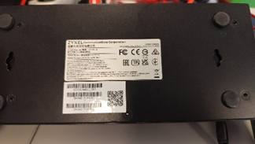
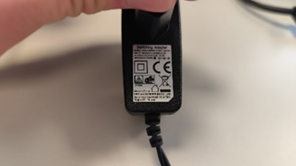
Sette maskin i statisk IP
Åpne nettverkstilkoblinger
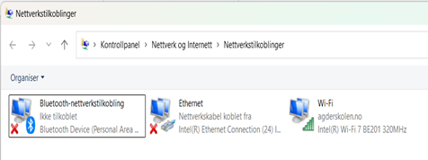
Deaktiver trådløs internett
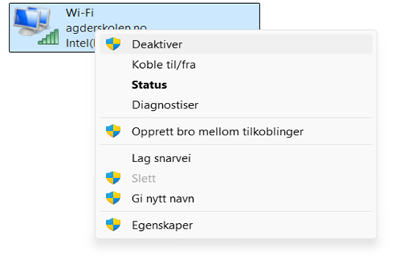
Høyre klikk ethernett. Trykk på egenskaper deretter internettprotokoll tcp4.
Velg bruk følgende IP adresse. Og bruk en gyldig ip adresse og sett nett masken til riktig for svitsjen. Ved første gangs tilkobling vil dette være 192.168.1.(et tall mellom 2 og 254) for ip og 255.255.255.0 for nett maske trykk ok for å trykke deg ut
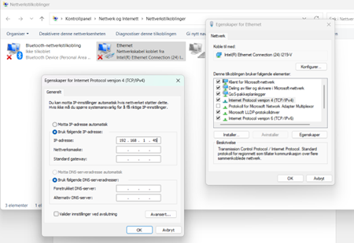
Tilkobling og innlogging på svitsj
Skriv in svitsjens ip adresse om den er uendret vil den være 192.168.1.1
Bruker navnet er admin og passord 1234 igjen om det er uendret
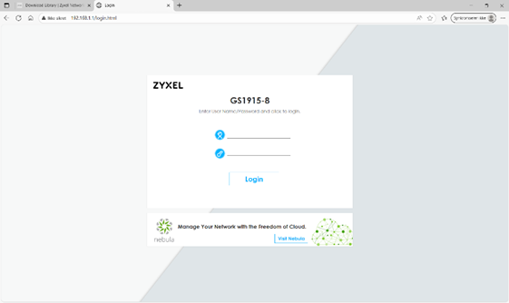
Stille inn klokke og justere dato
Trykk på basic settings også general setup
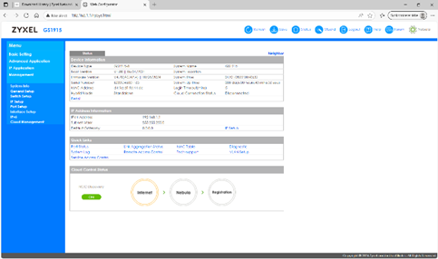
New time legge inn ny tid og ny dato husk pass på at den ikke er koblet på en use time server when bootup og at time server 1 2 og 3 er tom
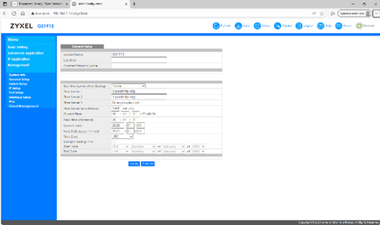
Lagre siste justering
Trykk på apply også save
Ta backup av svitsj
Trykk managment også maintenance
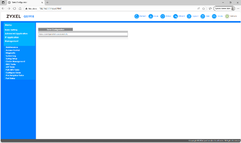
Trykk på backup configuration

Velg hvilken konfigurasjon man vil lage backup til også trykke backup
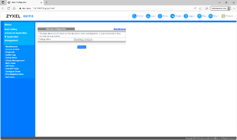
Kontrollere svitsjens software versjon og laste ned ny
Sjekk hvilken versjon firmwaren på svitsjen har. Søk opp nøyaktig model navn på svitsjen og last ned eventuell nyere programvare.
Installere ny software og ny backup
Pakk ut zip filen
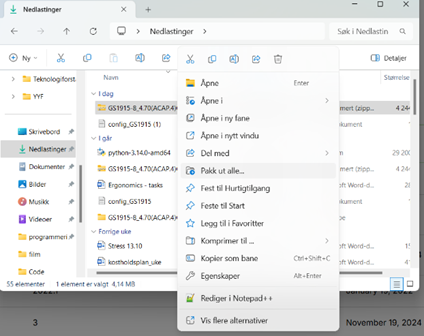
Gå inn til managment og maintenance igjen
Trykk på firmware upgrade
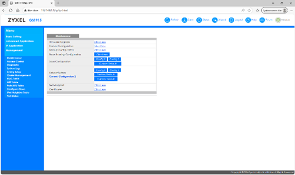
Trykk på velg fil også velger du bin filen i den mappa du tidligere pakket ut også trykker du bare på upgrade.
Ta ny backup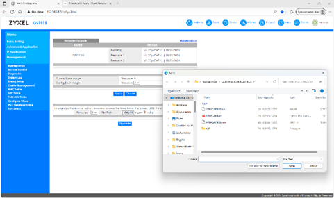
Sette opp vlan
Trykk på advanced application også på VLAN
Trykk på VLAN configuration
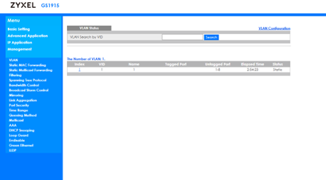
Trykk på static VLAN setup
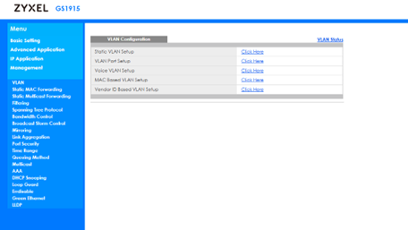
Siden VLAN2 nettverket er koblet til port 1 på svitsjen, velg «Fixed» for å konfigurere port 1 til å være ett permanent medlem bare til VLAN-et.
Trykk add også save
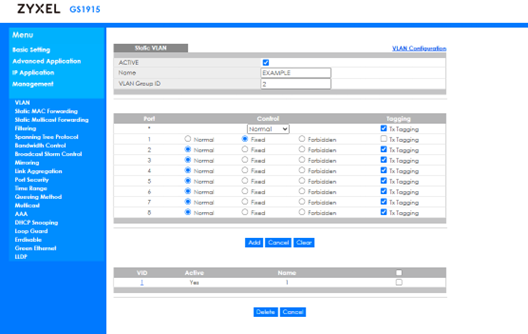
Trykk advanced application også trykk på VLAN
Trykk VLAN configuration
Trykk VLAN port setup
Bytt PVID fra Port 1 til 2
Trykk apply
Trykk på save
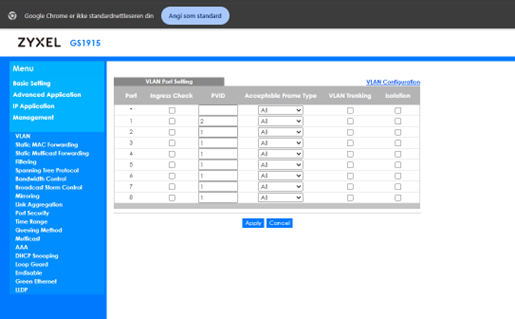
Velg basic setting, så IP setup også IP configuration
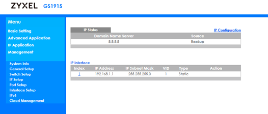
Change managment IP adresses så apply og save
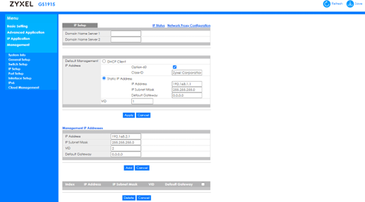
Bytt ethernett utgangen til Port 1
Endre IP-adressen din til 192.168.2.xx (ikke bruk 1)
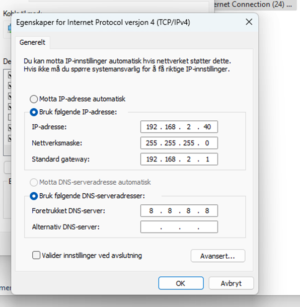
sjekk hvis du kan koble deg til svitsjen via Port 1 med den nye IP-adressen for VLAN 2
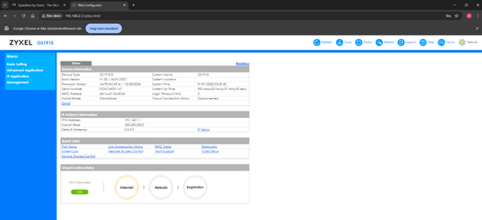